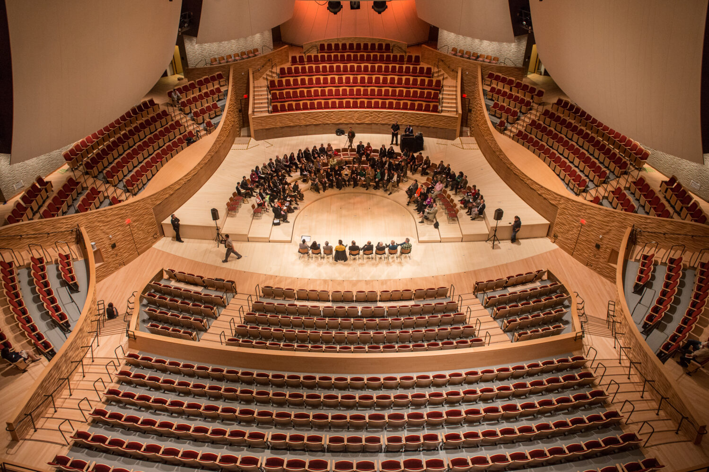
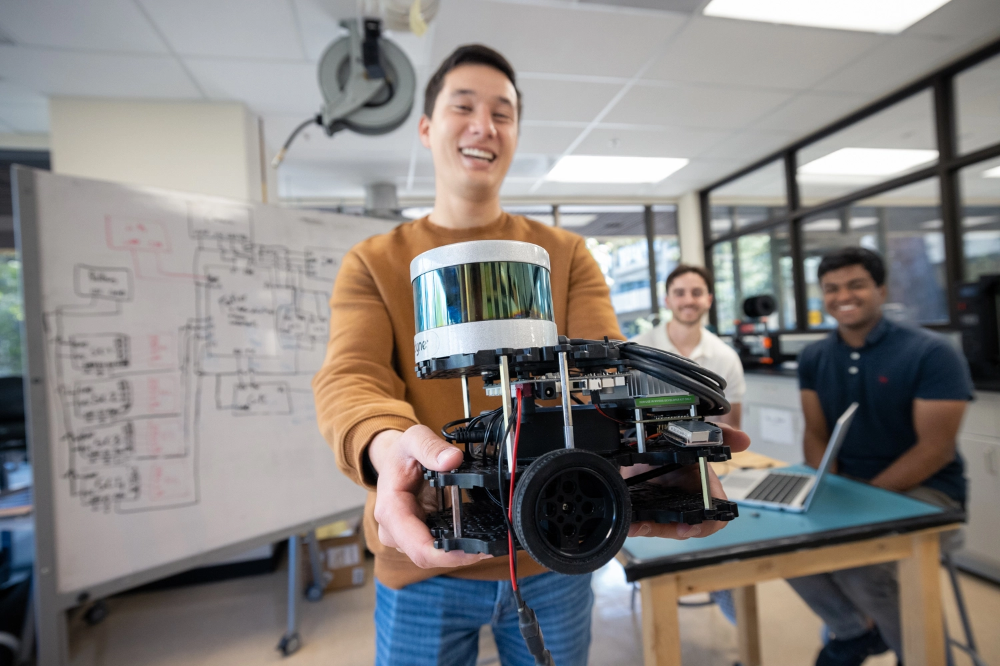

VHB provides students the opportunity to engage with big ideas, to cross conceptual and disciplinary boundaries, and to become global citizens who embrace diversity of thought and experience. We offer students broad and deep academic programs across seven schools and multiple fields – including the arts and humanities, natural and social sciences, engineering, sustainability, medicine, law, education, and business. The university’s breadth of excellence and culture of innovation uniquely position it to attract and retain the best faculty in the world, who offer students the knowledge and tools to discover and embrace new ideas, and to prepare for successful careers and lives of service. to follow and perfect for any meal. Let's get started!
In University Education, Sports play an important role in the development of integrated personality of the youth including – Body, Mind and Spirit. Accordingly, active participation of University students in competitive sports generates a spirit of healthy competition in daily life too. It is, therefore, necessary that university youth of country needs to be brought together on a “National Platform” through the media of sports and physical activities with a view to channelize youthful energy into constructive directions, as a nation building process.
VHB provides students the opportunity to engage with big ideas, to cross conceptual and disciplinary boundaries, and to become global citizens who embrace diversity of thought and experience. We offer students broad and deep academic programs across seven schools and multiple fields – including the arts and humanities, natural and social sciences, engineering, sustainability, medicine, law, education, and business. The university’s breadth of excellence and culture of innovation uniquely position it to attract and retain the best faculty in the world, who offer students the knowledge and tools to discover and embrace new ideas, and to prepare for successful careers and lives of service. to follow and perfect for any meal. Let's get started!
We believe strongly in the role that higher education plays in supporting a thriving society. Colleges and universities not only prepare students for their chosen path, but they help create the next generation of citizen leaders and problem solvers. Higher education institutions pursue a distinct and enduring mission in our society, dedicated solely to the creation and dissemination of knowledge. The breadth and richness of the fabric that comprises the world’s institutions of higher learning are integral to long-term human advancement and well-being.
VHB provides students the opportunity to engage with big ideas, to cross conceptual and disciplinary boundaries, and to become global citizens who embrace diversity of thought and experience. We offer students broad and deep academic programs across seven schools and multiple fields – including the arts and humanities, natural and social sciences, engineering, sustainability, medicine, law, education, and business. The university’s breadth of excellence and culture of innovation uniquely position it to attract and retain the best faculty in the world, who offer students the knowledge and tools to discover and embrace new ideas, and to prepare for successful careers and lives of service. to follow and perfect for any meal. Let's get started!
